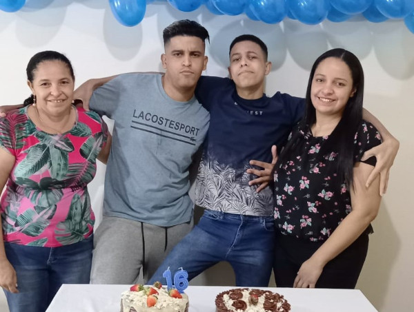

Otavio Ferreira

Quem sou?
Olá! meu nome é Otavio Ferreira, tenho 16 anos e esse site foi escrito por mim mesmo apenas com html e css, essa é uma forma para mim colocar meus conhecimentos a prova, visto que terminei o primeiro módulo do curso de html/css de Gustavo Guanabara, resolvi criar um site com todas as informações possiveis que vi no módulo 1. Voltando um pouco para mim, eu sou um garoto que está fazendo o ensino médio em uma eeep do Ceará, cursando o curso de informática, eu sou de Jardim-Ceará e quero aprender o máximo possível para seguir uma carreira no ramo da informática. Por fim espero que voçê aproveite 100% desse mini-projeto de site que eu criei.
Família

Como todo mundo, eu também tenho uma família, hoje eu moro com meu irmão e minha irmã e também junto com minha mãe. Meu pai é separado da minha mãe e mora em São Paulo, mas eu e meus irmãos mantemos contato constante com ele.
Veja mais
Hobbies
Eu sou uma pessoa bastante reservada e curto fazer coisas de pessoas reservadas hahahaha, veja as principais delas:
- Gosto de jogos desafiadores que faz as pessoas pensarem como o xadrez por exemplo, mas eu gosto muito do cubo mágico, sendo esse um dos meus hobbies favoritos.veja mais
- Uma das minhas redes sociais favoritas é YouTube, foi a primeira que conheci, la eu sigo grandes criadores de vídeos, além de enterternimento, também estudo muito por la veja mais
- Gosto também de assistir séries, eu ja assisti bastantes séries na Netflix, uma plataforma que consumo bastante coisas de lá veja mais
- por útimo eu gosto de estudar as diversas áreas do conhecimento, humanas é a minha favoritas, mas tembém gosto das outras áreas, gosto de tecnologia, mas me empolgo bastante quando o assunto é estudar idiomas, no momento eu estudo inglês. veja mais
Minhas fotos
Quer ver algumas fotos minhas?
Veja mais fotos
instituições
veja agora alguamas das escolas que eu estudei
- EEF Senador Carlos Jereissati
- EEF Dr. Romão Sampaio
- EEEP Dr. Napoleão Neves da Luz